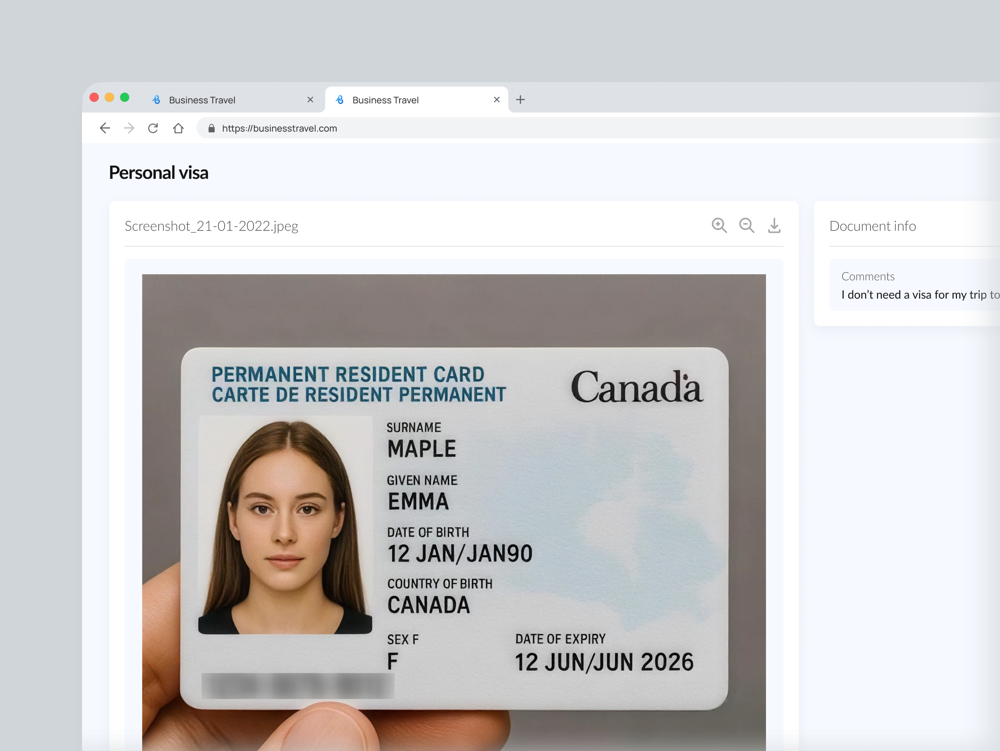
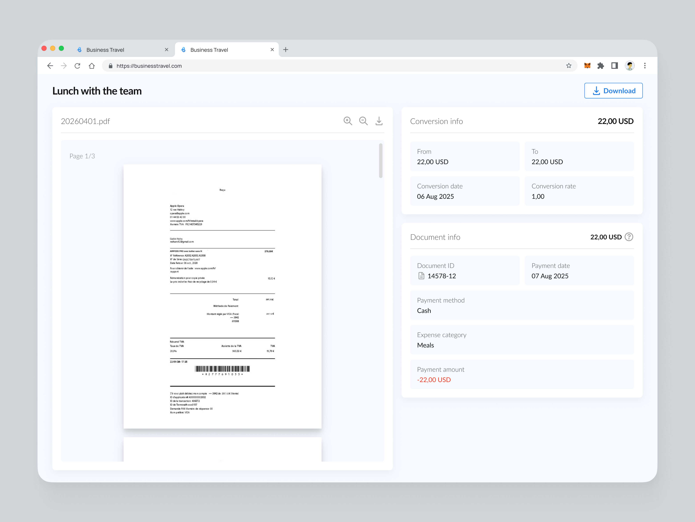
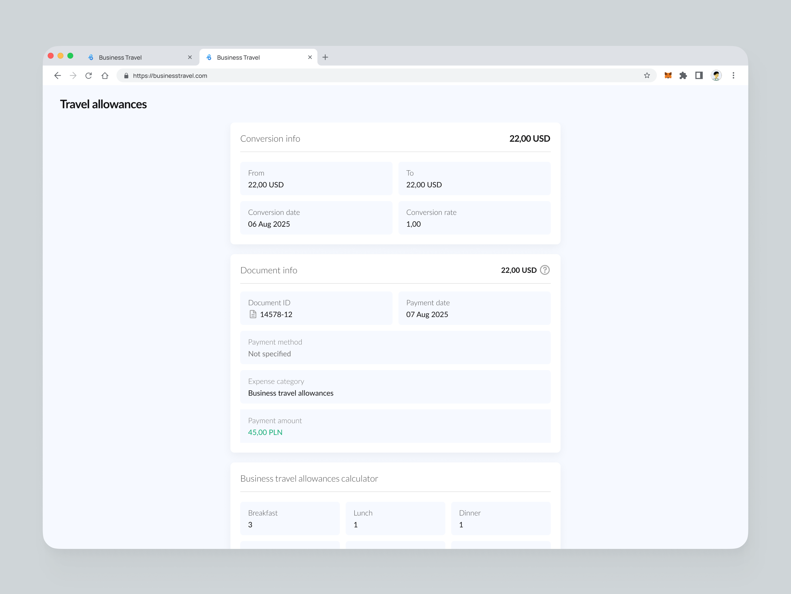
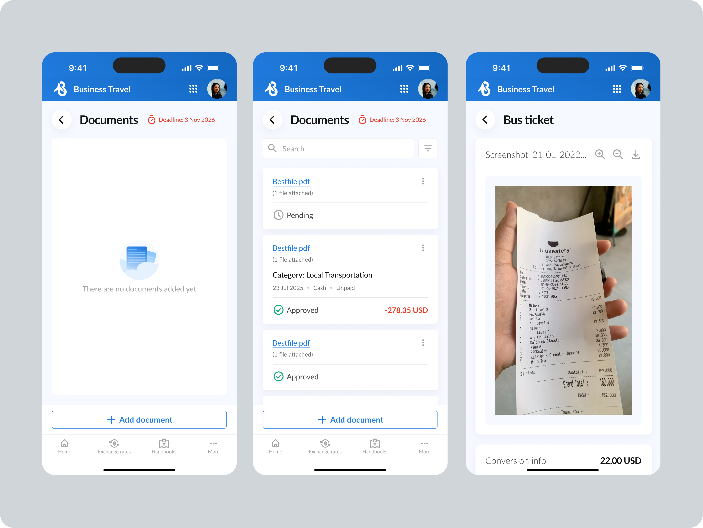

Document Preview Redesign
01. Discover — the pain and the task
Внутренний продукт по запросам, оформлению, сбору бюджета и отчетности по командировкам работает с тремя типами документов: тревел-заявки (не финансовые), компенсации (чеки, тренсферы, инвойсы, банковские выписки) и отчеты по корпоративным картам. Изначально превью документа было модальным окном — этого хватало для компактных тревел-заявок и компенсаций. Но когда внедрили отчетность по корпоративным картам, объем данных на документ вырос кратно.
Модалка перестала вмещать контент так, чтобы это было удобно главному пользователю превью — бухгалтеру, который просматривает десятки документов ежедневно. Формального ТЗ на редизайн не было — я начала с анализа текущего опыта. Мобильная версия уже показывала превью как отдельную страницу, поэтому я предложила синхронизировать подход и на десктопе: уйти от модалки к полноэкранной странице с уникальным URL.
02. Define — goal and constraints
Цель: сделать превью удобным для работы с тяжелыми документами, не ломая сценарий бухгалтера и не теряя контекст при сверке данных.
Ограничения: шаблон должен одинаково хорошо работать и для 5 полей (запросов на компенсацию), и для 20+ полей (корпоративная карта). Нужно унифицировать опыт с мобильной версией и избежать фрагментации паттернов в продукте. Задача оформилась как поиск баланса между компактностью интерфейса и объемом данных, который нужно показать без потери фокуса.
03. Explore — the trade-off between length and perception
Я оценила два полярных подхода и их влияние на пользователя:
• Оставить модалку, но усложнить её. Ломает сценарий бухгалтера: приходится постоянно скроллить внутри окна, переключаться между модалкой и превью, терять место, где остановился.
• Полноэкранная страница с уникальным URL. Позволяет шерить прямую ссылку на документ и синхронизируется с мобильной версией. Риск — потеря контекста основного экрана, но для глубокой работы с документом это оправдано.
Вместе с продактом пришли к выводу: модалка исчерпала свой ресурс. Идем по пути отдельной страницы.
04. Design — the solution
Я спроектировала единый шаблон, который масштабируется под любой объем данных. Документ располагается слева (с миниатюрами фото документа, если их несколько), а данные сгруппированы по смыслу справа: Transaction info, Vendor info, Card details, Document info. Блоки с данными имеют независимый вертикальный скролл, что позволяет шаблону одинаково хорошо работать и для коротких, и для длинных документов, не пытаясь впихнуть всё в фиксированную высоту.



05. Key decisions
- Расположение элементов смоделировано по реальному поведению. Документ слева, данные для сверки — справа, на одном уровне глаз. Никаких переключений между модалкой и превью. Это зеркалит то, как люди физически кладут чек рядом с блокнотом при сверке записей, а не выдуманный интерфейсный паттерн.
- Один шаблон вместо трех. Вместо того чтобы проектировать отдельно под каждый тип документа, я сделала шаблон, который работает и для 5 полей, и для 20+. Группировка данных в блоки с вертикальным скроллом справа решила проблему фиксированной высоты модалки.
- Полноэкранный вид с уникальным URL. Помимо решения проблемы нехватки места, это дало возможность шерить прямую ссылку на конкретный документ — чего не умела модалка.
- Синхронизация с мобильной версией. Десктоп и мобильный теперь используют одну логику «отдельная страница вместо оверлея», что снизило фрагментацию паттернов и упростило поддержку продукта.

06. Deliver & reflect
По фидбеку от команды бухгалтеров, сверять документ с отчетом стало заметно проще и быстрее: размещение документа и данных бок о бок убрало необходимость постоянно скроллить внутри модалки и терять контекст. Количественных данных по трекингу времени пока нет, но качественный фидбек от команды, которая использует этот экран ежедневно, подтверждает, что редизайн решил исходную проблему.
Что я забираю из этого кейса. Лучшие интерфейсные паттерны часто лежат на поверхности физического мира. Моделирование интерфейса по реальному поведению работает лучше, чем абстрактные UI-решения, потому что пользователю не нужно учить новую логику — он просто переносит привычное действие в цифру. А унификация с мобильной версией — это не просто «сделать консистентно», а способ снизить когнитивную нагрузку и упростить поддержку продукта в долгосрочной перспективе. Ограничения (разный объем данных в документах) стали не проблемой, а входными данными для создания гибкого, масштабируемого шаблона.